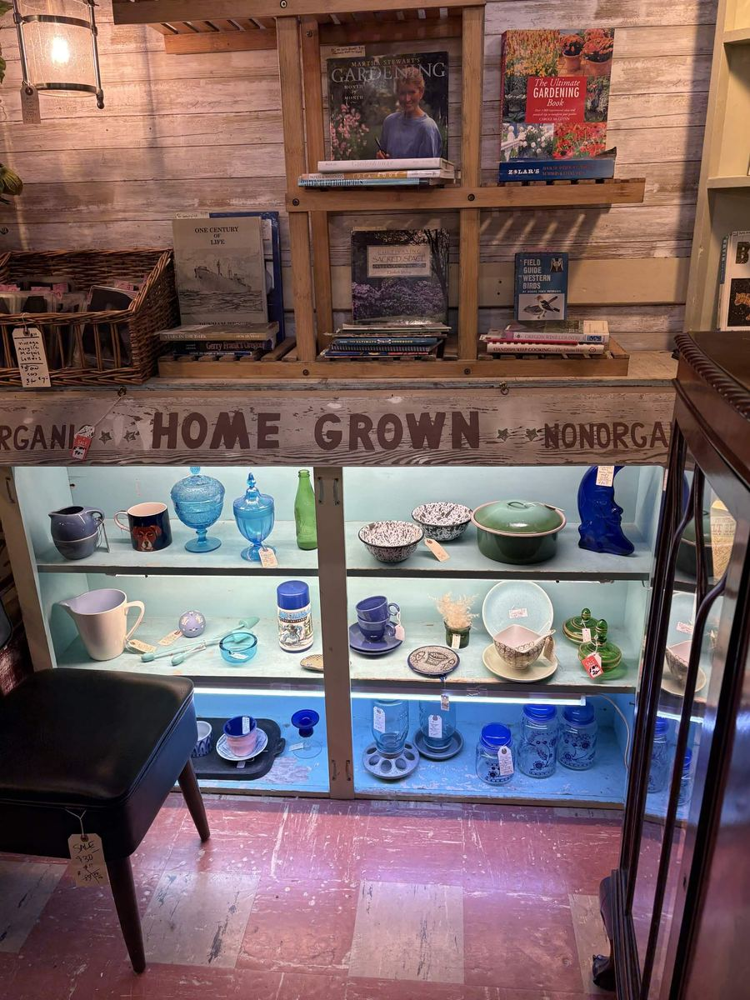
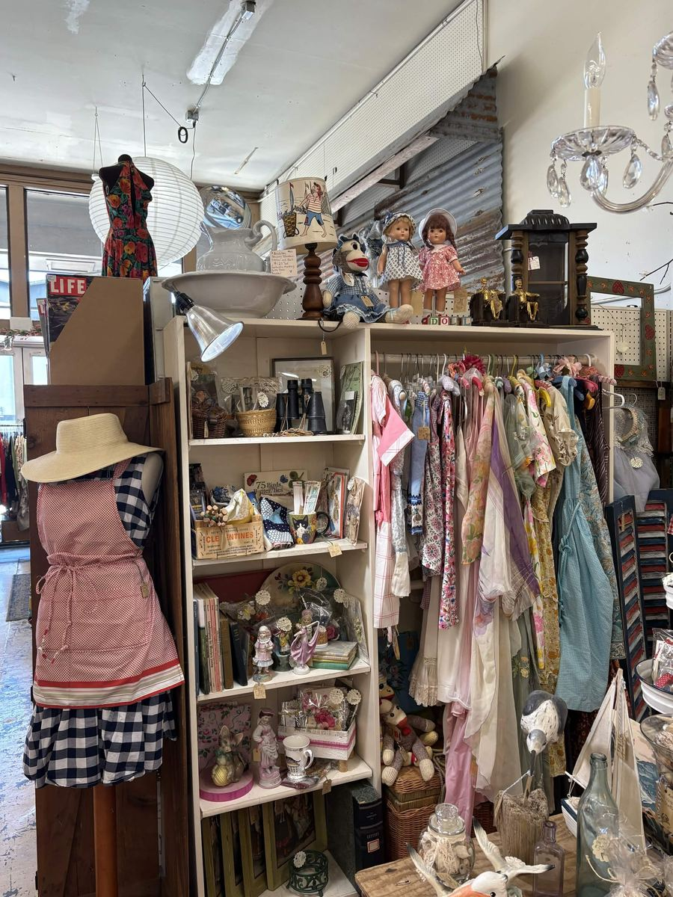

Records
Wax Museum Records
The coast's crate-digging stop. Alphabetized flip bins of vinyl, framed album art, and a wall of original show flyers. New arrivals land all the time.
Follow on InstagramVintage 101 is home to more than twenty independent vendors across the marketplace. Wax Museum Records and MCM Vintage are two you will find by name. The booths below show the kinds of finds each corner of the shop keeps, and the lineup changes as vendors come and go.
Filter by what you came for, or browse them all. Records and mid-century, cottage and shabby chic, glassware, jewelry, Americana, and a case of Oregon chocolate.
The coast's crate-digging stop. Alphabetized flip bins of vinyl, framed album art, and a wall of original show flyers. New arrivals land all the time.
Follow on Instagram
A mid-century corner of the record room, with classic covers and posters worth flipping through.

A full glass case of truffles, creams, clusters, and barks, all handmade in Oregon. Milk and dark, most pieces just a dollar or two.

The furniture department next door, with antique, vintage, mid-century, and newer pieces, lighting, and art.

Aprons, lace, painted hutches, and seaside curios styled into a soft cottage corner.

Shelves of amber, green, and carnival glass that catch the light all day.

Enamelware, jars, and blue glass under a hand lettered Home Grown sign.

Racks of dresses, aprons, and nightgowns waiting to be rummaged through.

Globes, pottery, and curiosities from around the world in an oak cabinet.

A booth hung wall to wall with original paintings from coastal artists.

Framed film and music posters hung overhead, from Goldfinger on down.

Dated LIFE magazine back issues filed by the box for collectors and browsers.

Lit cases of sterling, turquoise, and Firefly earrings and necklaces.

An antique 48 star flag, naval prints, and a careful row of militaria.
Every booth restocks and rotates, so the marketplace looks a little different every time you come back. Stop in at the south end of the Coos Bay Boardwalk and wander slow.